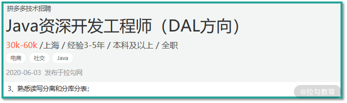
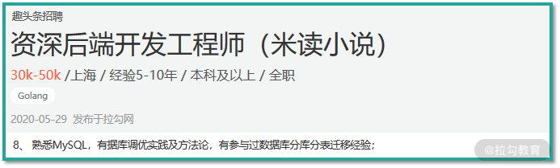
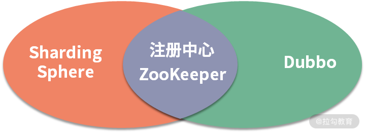

- 00 如何正确学习一款分库分表开源框架？.md.html
- 01 从理论到实践：如何让分库分表真正落地？.md.html
- 02 顶级项目：ShardingSphere 是一款什么样的 Apache 开源软件？.md.html
- 03 规范兼容：JDBC 规范与 ShardingSphere 是什么关系？.md.html
- 04 应用集成：在业务系统中使用 ShardingSphere 的方式有哪些？.md.html
- 05 配置驱动：ShardingSphere 中的配置体系是如何设计的？.md.html
- 06 数据分片：如何实现分库、分表、分库+分表以及强制路由？（上）.md.html
- 07 数据分片：如何实现分库、分表、分库+分表以及强制路由？（下）.md.html
- 08 读写分离：如何集成分库分表+数据库主从架构？.md.html
- 09 分布式事务：如何使用强一致性事务与柔性事务？.md.html
- 10 数据脱敏：如何确保敏感数据的安全访问？.md.html
- 11 编排治理：如何实现分布式环境下的动态配置管理？.md.html
- 12 从应用到原理：如何高效阅读 ShardingSphere 源码？.md.html
- 13 微内核架构：ShardingSphere 如何实现系统的扩展性？.md.html
- 14 分布式主键：ShardingSphere 中有哪些分布式主键实现方式？.md.html
- 15 解析引擎：SQL 解析流程应该包括哪些核心阶段？（上）.md.html
- 16 解析引擎：SQL 解析流程应该包括哪些核心阶段？（下）.md.html
- 17 路由引擎：如何理解分片路由核心类 ShardingRouter 的运作机制？.md.html
- 18 路由引擎：如何实现数据访问的分片路由和广播路由？.md.html
- 19 路由引擎：如何在路由过程中集成多种路由策略和路由算法？.md.html
- 20 改写引擎：如何理解装饰器模式下的 SQL 改写实现机制？.md.html
- 21 执行引擎：分片环境下 SQL 执行的整体流程应该如何进行抽象？.md.html
- 22 执行引擎：如何把握 ShardingSphere 中的 Executor 执行模型？（上）.md.html
- 23 执行引擎：如何把握 ShardingSphere 中的 Executor 执行模型？（下）.md.html
- 24 归并引擎：如何理解数据归并的类型以及简单归并策略的实现过程？.md.html
- 25 归并引擎：如何理解流式归并和内存归并在复杂归并场景下的应用方式？.md.html
- 26 读写分离：普通主从架构和分片主从架构分别是如何实现的？.md.html
- 27 分布式事务：如何理解 ShardingSphere 中对分布式事务的抽象过程？.md.html
- 28 分布式事务：ShardingSphere 中如何集成强一致性事务和柔性事务支持？（上）.md.html
- 29 分布式事务：ShardingSphere 中如何集成强一致性事务和柔性事务支持？（下）.md.html
- 30 数据脱敏：如何基于改写引擎实现低侵入性数据脱敏方案？.md.html
- 31 配置中心：如何基于配置中心实现配置信息的动态化管理？.md.html
- 32 注册中心：如何基于注册中心实现数据库访问熔断机制？.md.html
- 33 链路跟踪：如何基于 Hook 机制以及 OpenTracing 协议实现数据访问链路跟踪？.md.html
- 34 系统集成：如何完成 ShardingSphere 内核与 Spring+SpringBoot 的无缝整合？.md.html
- 35 结语：ShardingSphere 总结及展望.md.html
- 捐赠
00 如何正确学习一款分库分表开源框架？
你好，我是萧然，长期从事分布式系统的构建和优化工作，负责过大型电商以及物联网系统的设计和开发，曾带领团队完成业界领先的物联网数据平台建设工作，对基于 ShardingSphere 进行数据分库分表和治理工作有着丰富的实践经验。
互联网高速发展带来海量的信息化数据，也带来更多的技术挑战。以我工作多年的物联网行业为例，各种智能终端设备（比如摄像头或车载设备等）以每天千万级的数据量上报业务数据，电商、社交等互联网行业更不必说。这样量级的数据处理，已经远不是传统关系型数据库的单库单表架构所能支撑的，如何高效存储和访问这些数据，成为一个非常现实且亟待解决的问题。
但由于生态系统的完善性，关系型数据库仍然是数据平台核心业务的基石，具有巨大市场。虽然业界存在一批 NoSQL 数据库，可以天然集成类似分布式分片这样的功能，然而并不具备诸如事务管理等核心功能。
面对系统中日益增长的海量数据，业界普遍做法是引入分库分表架构，我们可以整合纵向分库和横向分表的设计方法来应对海量数据的存储和访问。
ShardingSphere：让分库分表真正落地
想要实现支持海量数据存储和访问的分库分表架构，抛开业务层面的规划和设计，开发人员在技术实现层面也面临着一系列的问题，比如：
- 数据分片：如何用最小的成本来实现关系型数据库的分库分表操作？
- 代理机制：如何基于普通的客户端工具对分库分表架构下的数据进行访问？
- 分布式事务：如何确保分布在不同数据库和表中同一份业务数据的一致性？
- 数据库治理：如何确保分散在各个环境下的数据源和配置信息等数据库资源的一致性？
分布式数据库中间件 ShardingSphere 作为一个分库分表的“利器”，可以很好地解决这些痛点问题，并且相比其他分库分表框架（如 Cobar、MyCat 等）具有以下几点优势：
- 技术权威性，是 Apache 基金会历史上第一个分布式数据库中间件项目，代表着这一领域的最新技术方向；
- 解决方案完备性，它集客户端分片、代理服务器，以及分布式数据库的核心功能于一身，提供了一套适用于互联网应用架构、云服务架构的，完整的开源分布式数据库中间件解决方案和生态圈。
- 开发友好性，提供了友好的集成方式，业务开发人员只需要引入一个 JAR 包就能在业务代码中嵌入数据分片、读写分离、分布式事务、数据库治理等一系列功能。
- 可插拔的系统扩展性：它的很多核心功能均通过插件的形式提供，供开发者排列组合来定制属于自己的独特系统。
这些优秀的特性，让 ShardingSphere 在分库分表中间件领域占据了领先地位，并被越来越多的知名企业（比如京东、当当、电信、中通快递、哔哩哔哩等）用来构建自己强大而健壮的数据平台。如果你苦于找不到一款成熟稳定的分库分表中间件，那么 ShardingSphere 恰能帮助你解决这个痛点。
你为什么需要学习这个课程？
但凡涉及海量数据处理的企业，就一定要用到分库分表。如何进行海量数据的分库分表设计和迁移，有效存储和访问海量业务数据，已经成为很多架构师和开发人员需要规划和落实的一大课题，也成为像拼多多、趣头条、爱库存等很多优质公司高薪诚聘的岗位需求。



但优质人才非常短缺，一是因为从事海量数据处理需要相应的应用场景和较高的技术门槛，二是业界也缺乏成熟的框架来完成实际需求。掌握诸如 ShardingSphere 这样的主流分库分表和分布式数据库中间件框架的技术人员也成了各大公司争抢的对象。
鉴于市面上还没有对 ShardingSphere 进行系统化介绍的内容，我希望能来弥补这个空白。此外，分库分表概念虽然比较简单，但在实际开发过程中要落地却也不容易，也需要一个系统的、由浅入深的学习过程。
课程设计
本课程共 6 大部分，基于 ShardingSphere 开源框架，介绍主流的分库分表解决方案和工程实践，是业界第一个全面介绍 ShardingSphere 核心功能和实现原理的体系化课程，填补了这块空白。
- 第一部分：引入 ShardingSphere。 这一部分将从如何正确理解分库分表架构讲起，引出 JDBC 规范与 ShardingSphere 的关系，并介绍如何基于 ShardingSphere 所提供的配置体系，给出在业务系统中使用 ShardingSphere 的多种具体方式。
- 第二部分：ShardingSphere 核心功能。 ShardingSphere 包含很多功能特性，这部分会给出数据分片、读写分离、分布式事务、数据脱敏、编排治理等核心功能的具体使用方法和开发技巧。
第三~六部分是课程的重点，从不同维度深入剖析 ShardingSphere 的内核架构，从源码级别给出分库分表的设计和实现机制，并且有助于你提升源码理解能力。
- 第三部分：ShardingSphere 源码解析之基础设施。 这部分将围绕 ShardingSphere 的基础架构展开讨论，首先给你高效阅读 ShardingSphere 源码的方法，并介绍微内核架构和分布式主键的设计理念，以及在 ShardingSphere 的具体实现方法。
- 第四部分：ShardingSphere 源码解析之分片引擎。 这部分内容将关注 ShardingSphere 最核心的分片引擎实现原理，从 SQL 的解析引擎开始，一路进行路由引擎、改写引擎、执行引擎、归并引擎等分片引擎中各个核心技术点的源码解析。
- 第五部分：ShardingSphere 源码解析之分布式事务。 分布式事务是分布式数据库中间件的必备功能，ShardingSphere 内部也提供了对分布式事务的一种抽象。我将详细分析这种抽象过程，以及如何实现强一致性事务和柔性事务。
- 第六部分：ShardingSphere 源码解析之治理与集成。 最后这部分内容将讨论如何基于改写引擎实现低侵入性数据脱敏方案、如何基于配置中心实现配置信息的动态化管理、如何基于注册中心实现数据库访问熔断机制、如何基于 Hook 机制以及 OpenTracing 协议实现数据访问链路跟踪等数据库治理方面的问题，我将给出这些问题背后的详细答案。
此外，课程中的核心功能部分，我是基于具体的案例分析并给出详细的代码实现和配置方案，方便你进行学习和改造。课程配套代码，你可以在 https://github.com/tianyilan12/shardingsphere-demo 下载。
你将获得
1. 分库分表的应用方式和实现原理
帮你理解 ShardingSphere 的核心功能特性，来满足日常开发工作所需，同时基于源码给出这些功能的设计原理和实现机制。
2. 学习优秀的开源框架，提高技术理解与应用能力
技术原理是具有相通性的。以 ZooKeeper 这个分布式协调框架为例，ShardingSphere 和 Dubbo 中都使用它来完成了注册中心的构建：

在 ShardingSphere 中，我们可以基于 ZooKeeper 提供的动态监听机制来判断某个数据库实例是否可用、是否需要对某个数据库实例进行数据访问熔断等操作，也可以使用 ZooKeeper 的这一功能特性来实现分布式环境下的配置信息动态管理。
随着对 ShardingSphere 的深入学习，你会发现类似的例子还有很多，包括基于 SPI 机制的微内核架构、基于雪花算法的分布式主键、基于 Apollo 的配置中心、基于 Nacos 的注册中心、基于 Seata 的柔性事务、基于 OpenTracing 规范的链路跟踪等。
而这些技术体系在 Dubbo、Spring Cloud 等主流开发框架中也多有体现。因此这个课程除了可以强化你对这些技术体系的系统化理解，还可以让你掌握这些技术体系的具体应用场景和实现方式，从而实现触类旁通。
3. 学习从源码分析到日常开发的技巧
从源码解析到日常应用是本课程的一个核心目标。基于 ShardingSphere 这款优秀的开源框架，可以提炼出一系列包括设计模式的应用（如工厂模式、策略模式、模板方法等）、微内核架构等架构模式、组件设计和类层结构划分的思想和实现策略、常见缓存的应用以及自定义缓存机制的实现、Spring 家族框架的集成和整合等开发技巧，这些开发技巧都能够直接应用到日常开发过程。
讲师寄语
技术的发展日新月异，随着数据中台等架构设计理念以及各种人工智能应用的普及，数据量级的不断提升是大部分软件系统面临的一大挑战，类似 ShardingSphere 的分库分表框架也将迈向一个新的发展时期，并在更多企业中得到应用。
但是成熟度高且发展活跃的分库分表框架并不多，企业的选择余地并不大。ShardingSphere 是这一领域目前为止唯一一个 Apache 顶级项目，也是提供核心功能最丰富的一个，代表着这一领域的一种技术发展方向。希望这个课程能够让你学好 ShardingSphere，并且掌握触类旁通的学习方法。
最后，欢迎你在留言区分享数据处理和架构设计方面的经历和经验，也希望你能通过这门课程得到想要的收获。一起加油吧！
© 2019 - 2023 Liangliang Lee. Powered by gin and hexo-theme-book.